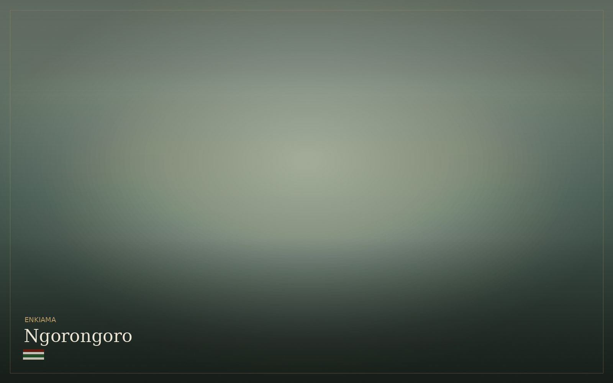

Kaldera
The caldera
The road climbs to a rim above two thousand metres, and then the land simply falls away. What lies below is not a park in the ordinary sense — it is a collapsed volcano holding a complete ecosystem, and the people who have always lived alongside it.
What you are looking at
Ngorongoro is the largest intact volcanic caldera in the world — roughly nineteen kilometres across, with walls six hundred metres high. It formed when a mountain, once perhaps as tall as Kilimanjaro, collapsed into itself.
The effect is an enclosure. Grassland, soda lake, swamp and acacia forest sit inside a single bowl, and the density of animals within it is unlike anywhere else in Tanzania. You are not searching for wildlife here; you are among it from the moment you reach the floor.
The honest caveat
We will not pretend otherwise. The floor is compact, access is controlled, and in high season the vehicles are many. There are mornings when you will share a lion with a dozen other cars.
What changes the experience entirely is timing. Descending at first light, before the day’s vehicles arrive, is a completely different crater from the one people describe at ten in the morning. We plan for that descent, and we choose where you sleep to make it possible.
More than the floor
Ngorongoro is not only the crater. The wider conservation area holds highland forest, the Empakaai and Olmoti craters, and highlands where Maasai communities graze cattle as they have for generations. This is one of the few protected areas in Africa where people and wildlife share the land by design rather than by exception.
Walking in the highlands, standing above Empakaai’s flamingo lake, or spending real time with a Maasai community are all possible here, and almost always more memorable than another hour on the crater floor. We will usually suggest at least one.
How we compose it
Most itineraries give the crater a single rushed morning wedged between two long drives. We would rather you sleep on the rim, descend at dawn, and keep the rest of the day for the highlands or an unhurried drive onward.
A crater day is also expensive in permit terms, and we will show you exactly what it costs and why. If your journey would be better served by more time in the Serengeti and one crater day rather than two, we will say so.
Is the Ngorongoro Crater worth visiting despite the crowds?
Yes, if it is timed well. The density of wildlife is genuinely unmatched in Tanzania. The difference between a crowded crater and a quiet one is almost entirely about descending at first light, which means sleeping on the rim rather than driving in from elsewhere.
How long do you need at Ngorongoro?
One full day on the floor is usually enough, because access is time-limited and the area is compact. We would rather add a day in the wider highlands than a second descent.
Can you see the Big Five in Ngorongoro?
All five are present, though rhino are never guaranteed and leopard are uncommon on the open floor. The crater does offer one of the better chances in Tanzania of seeing black rhino, usually at distance.
Often composed alongside
If you are wondering whether Ngorongoro Crater belongs in your journey, ask us. We will tell you honestly.
Begin a conversation →